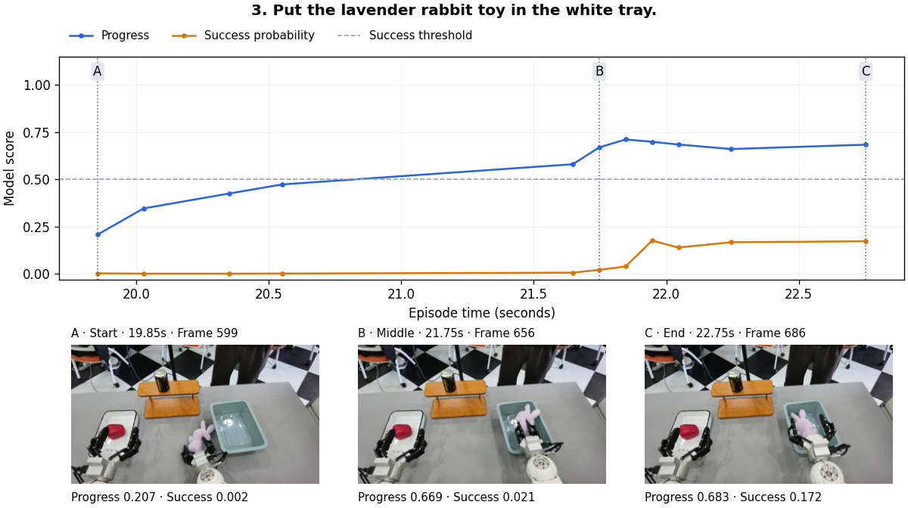
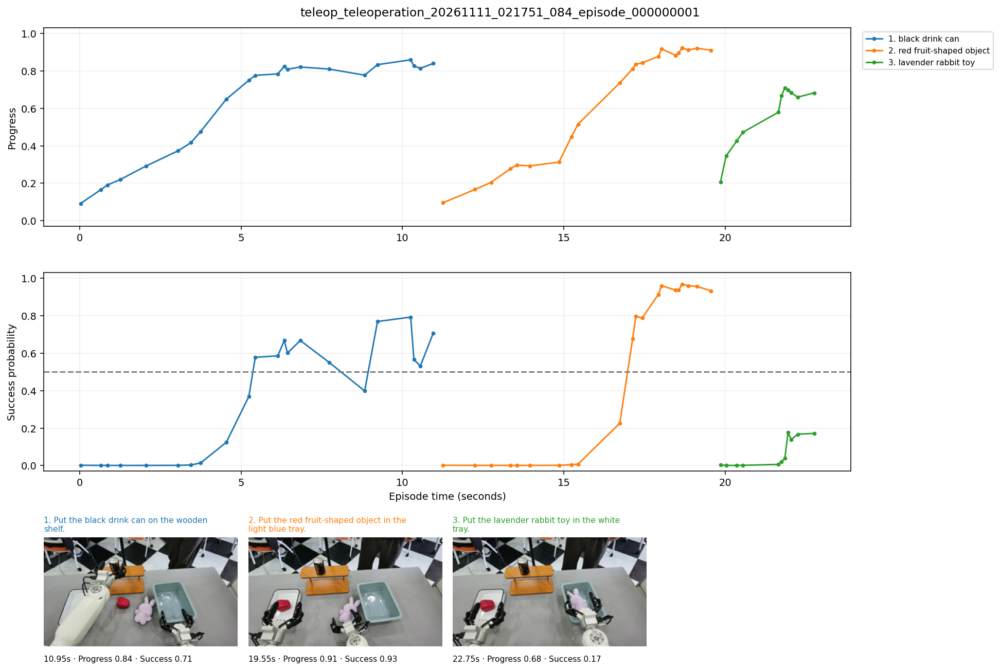

1. Put the black drink can on the wooden shelf.

Evaluated 54 selected head-camera frames across 3 instruction segments, spanning 0.03–22.75 seconds of episode time. 21 frames carry source annotation review flags. The model assigned success probability above 0.5 to 22 frames.
The 0.5 threshold is the example script’s decision threshold. Frame counts above this threshold describe model outputs. Ground-truth success rates and accuracy require human labels.
Each panel shows one instruction segment. Lettered markers on the plot match the selected head-camera images below it; the lines include every scored frame in that segment.


Start and end scores refer to the first and last selected frame carrying that instruction. These boundaries come from next-subtask annotations. They may omit the previous action’s final release or verification frame. Each score uses up to eight frames available by that point within its instruction segment.
| Instruction | Time range / frames | Progress start → end | Success at end / peak | Frames above 0.5 | Review flags |
|---|---|---|---|---|---|
| Put the black drink can on the wooden shelf. | 0.03–10.95s 22 frames | 0.092 → 0.840 | 0.707 / 0.793 | 11/22 | 1 |
| Put the red fruit-shaped object in the light blue tray. | 11.25–19.55s 21 frames | 0.096 → 0.911 | 0.934 / 0.969 | 11/21 | 9 |
| Put the lavender rabbit toy in the white tray. | 19.85–22.75s 11 frames | 0.207 → 0.683 | 0.172 / 0.176 | 0/11 | 11 |
These notes were supplied with the selected frames. They have not been independently relabeled for this evaluation.
Raw head stream /home/jiahe/system012/data/teleop_teleoperation_20261111_021751_084/episode_000000001/observation.images.cam_head.parquet. Every selected JPEG was verified against the raw frame’s timestamp and SHA-256. The inference input uses RGB images with the short side resized to 240 pixels before Qwen processing.
The gallery lists the original selected frames and their exact instructions. Changing the selected history can change a prediction. Instruction transitions reset the context, so progress values across different segments describe different tasks.
Frame and context manifest · All frame scores · All subtask summaries

| Frame / time | Head camera | Instruction and review notes | Progress / success |
|---|---|---|---|
| 2 0.03s |  | Put the black drink can on the wooden shelf. | 0.092 / 0.001 |
| 21 0.66s |  | Put the black drink can on the wooden shelf. | 0.166 / 0.001 |
| 27 0.86s |  | Put the black drink can on the wooden shelf. | 0.191 / 0.000 |
| 39 1.26s |  | Put the black drink can on the wooden shelf. | 0.220 / 0.000 |
| 63 2.05s |  | Put the black drink can on the wooden shelf. | 0.292 / 0.000 |
| 93 3.05s |  | Put the black drink can on the wooden shelf. | 0.374 / 0.001 |
| 105 3.45s |  | Put the black drink can on the wooden shelf. | 0.417 / 0.003 |
| 114 3.75s |  | Put the black drink can on the wooden shelf. | 0.476 / 0.014 |
| 138 4.54s |  | Put the black drink can on the wooden shelf. | 0.650 / 0.124 |
| 159 5.24s |  | Put the black drink can on the wooden shelf. | 0.750 / 0.369 |
| 165 5.44s |  | Put the black drink can on the wooden shelf. | 0.777 / 0.578 |
| 186 6.14s |  | Put the black drink can on the wooden shelf. | 0.784 / 0.586 |
| 192 6.34s |  | Put the black drink can on the wooden shelf. | 0.825 / 0.668 |
| 195 6.44s |  | Put the black drink can on the wooden shelf. | 0.809 / 0.602 |
| 207 6.84s |  | Put the black drink can on the wooden shelf. | 0.822 / 0.668 |
| 234 7.73s |  | Put the black drink can on the wooden shelf. | 0.810 / 0.551 |
| 267 8.83s |  | Put the black drink can on the wooden shelf. | 0.778 / 0.398 |
| 279 9.23s |  | Put the black drink can on the wooden shelf. | 0.834 / 0.770 |
| 310 10.25s |  | Put the black drink can on the wooden shelf. | 0.860 / 0.793 |
| 313 10.35s |  | Put the black drink can on the wooden shelf. | 0.827 / 0.566 |
| 319 10.55s |  | Put the black drink can on the wooden shelf. | 0.814 / 0.531 |
| 331 10.95s |  | Put the black drink can on the wooden shelf. Task boundary: confirm release and next target in the original head/wrist images. | 0.840 / 0.707 |
| 340 11.25s |  | Put the red fruit-shaped object in the light blue tray. Task boundary: confirm release and next target in the original head/wrist images. | 0.096 / 0.001 |
| 370 12.25s |  | Put the red fruit-shaped object in the light blue tray. | 0.167 / 0.001 |
| 385 12.75s |  | Put the red fruit-shaped object in the light blue tray. | 0.205 / 0.000 |
| 403 13.34s |  | Put the red fruit-shaped object in the light blue tray. | 0.277 / 0.000 |
| 409 13.54s |  | Put the red fruit-shaped object in the light blue tray. | 0.298 / 0.000 |
| 421 13.94s |  | Put the red fruit-shaped object in the light blue tray. | 0.293 / 0.001 |
| 448 14.85s |  | Put the red fruit-shaped object in the light blue tray. | 0.313 / 0.001 |
| 460 15.24s |  | Put the red fruit-shaped object in the light blue tray. | 0.450 / 0.005 |
| 466 15.44s |  | Put the red fruit-shaped object in the light blue tray. | 0.515 / 0.007 |
| 505 16.73s |  | Put the red fruit-shaped object in the light blue tray. | 0.736 / 0.226 |
| 517 17.13s |  | Put the red fruit-shaped object in the light blue tray. | 0.812 / 0.676 |
| 520 17.23s |  | Put the red fruit-shaped object in the light blue tray. | 0.836 / 0.797 |
| 526 17.43s |  | Put the red fruit-shaped object in the light blue tray. | 0.844 / 0.789 |
| 541 17.93s |  | Put the red fruit-shaped object in the light blue tray. The red fruit is in the white tray, contrary to the configured fruit-to-blue rule. Corrective transfer remains unfinished. | 0.878 / 0.914 |
| 544 18.03s |  | Put the red fruit-shaped object in the light blue tray. The red fruit is in the white tray, contrary to the configured fruit-to-blue rule. Corrective transfer remains unfinished. | 0.919 / 0.961 |
| 557 18.46s |  | Put the red fruit-shaped object in the light blue tray. The red fruit is in the white tray, contrary to the configured fruit-to-blue rule. Corrective transfer remains unfinished. | 0.884 / 0.938 |
| 560 18.56s |  | Put the red fruit-shaped object in the light blue tray. The red fruit is in the white tray, contrary to the configured fruit-to-blue rule. Corrective transfer remains unfinished. | 0.896 / 0.938 |
| 563 18.66s |  | Put the red fruit-shaped object in the light blue tray. The red fruit is in the white tray, contrary to the configured fruit-to-blue rule. Corrective transfer remains unfinished. | 0.924 / 0.969 |
| 569 18.86s |  | Put the red fruit-shaped object in the light blue tray. The red fruit is in the white tray, contrary to the configured fruit-to-blue rule. Corrective transfer remains unfinished. | 0.912 / 0.961 |
| 577 19.13s |  | Put the red fruit-shaped object in the light blue tray. The red fruit is in the white tray, contrary to the configured fruit-to-blue rule. Corrective transfer remains unfinished. | 0.922 / 0.957 |
| 590 19.55s |  | Put the red fruit-shaped object in the light blue tray. Task boundary: confirm release and next target in the original head/wrist images.; The red fruit is in the white tray, contrary to the configured fruit-to-blue rule. Corrective transfer remains unfinished. | 0.911 / 0.934 |
| 599 19.85s |  | Put the lavender rabbit toy in the white tray. Task boundary: confirm release and next target in the original head/wrist images.; The red fruit is in the white tray, contrary to the configured fruit-to-blue rule. Corrective transfer remains unfinished. | 0.207 / 0.002 |
| 604 20.03s |  | Put the lavender rabbit toy in the white tray. The red fruit is in the white tray, contrary to the configured fruit-to-blue rule. Corrective transfer remains unfinished. | 0.346 / 0.001 |
| 614 20.35s |  | Put the lavender rabbit toy in the white tray. The red fruit is in the white tray, contrary to the configured fruit-to-blue rule. Corrective transfer remains unfinished. | 0.425 / 0.001 |
| 620 20.55s |  | Put the lavender rabbit toy in the white tray. The red fruit is in the white tray, contrary to the configured fruit-to-blue rule. Corrective transfer remains unfinished. | 0.473 / 0.001 |
| 653 21.65s |  | Put the lavender rabbit toy in the white tray. The red fruit is in the white tray, contrary to the configured fruit-to-blue rule. Corrective transfer remains unfinished. | 0.580 / 0.006 |
| 656 21.75s |  | Put the lavender rabbit toy in the white tray. The red fruit is in the white tray, contrary to the configured fruit-to-blue rule. Corrective transfer remains unfinished. | 0.669 / 0.021 |
| 659 21.85s |  | Put the lavender rabbit toy in the white tray. The red fruit is in the white tray, contrary to the configured fruit-to-blue rule. Corrective transfer remains unfinished. | 0.711 / 0.039 |
| 662 21.95s |  | Put the lavender rabbit toy in the white tray. The red fruit is in the white tray, contrary to the configured fruit-to-blue rule. Corrective transfer remains unfinished. | 0.699 / 0.176 |
| 665 22.05s |  | Put the lavender rabbit toy in the white tray. The red fruit is in the white tray, contrary to the configured fruit-to-blue rule. Corrective transfer remains unfinished.; The rabbit is in the light blue tray, contrary to the configured toys-to-white rule. Move it to the white tray. | 0.684 / 0.139 |
| 671 22.25s |  | Put the lavender rabbit toy in the white tray. The red fruit is in the white tray, contrary to the configured fruit-to-blue rule. Corrective transfer remains unfinished.; The rabbit is in the light blue tray, contrary to the configured toys-to-white rule. Move it to the white tray. | 0.660 / 0.167 |
| 686 22.75s |  | Put the lavender rabbit toy in the white tray. The red fruit is in the white tray, contrary to the configured fruit-to-blue rule. Corrective transfer remains unfinished.; The rabbit is in the light blue tray, contrary to the configured toys-to-white rule. Move it to the white tray. | 0.683 / 0.172 |